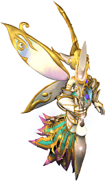

土屬性｜水屬性｜火屬性｜風屬性｜無屬性｜神聖屬性｜暗黑屬性｜統合屬性
狀態異常防禦｜99魔王區獎勵道具｜咒術師相關｜諾克斯要塞相關｜龍勳章
屬性詳情請看這裡。名字為橙色的是可附魔的道具。另外，未鑑定名稱是該道具在未鑑定狀態下的名字。
提供情報或編輯請求，請到情報提供公佈欄、編輯公佈欄。
土屬性
| 名稱 | 價格 | 限制 | 職業 | Wei | 取得方式 |
 阿斯勳章 阿斯勳章 | 3,000 | Lv1 | 戰修盜騎阿聖魔預吟 | 1 | 米魯里斯：雜貨商、盧亞斯：雜貨商、斯歐米：雜貨商、魔界村：雜貨商、魯克西翁：雜貨商、卡雷瓦拉：雜貨商、佩利哥布林[佩利哥布林]、血腥魔瓜、賽可魔瓜、 寶箱(深褐) 寶箱(深褐) |
| 能力 | 土屬性 |
| 名稱 | 價格 | 限制 | 職業 | Wei | 取得方式 |
 暫時的項鍊 暫時的項鍊 | 10 | Lv1 | 戰修盜騎阿聖魔預吟 | 1 | Q:屬性裝備任務 |
| 能力 | 土屬性 |
| 名稱 | 價格 | 限制 | 職業 | Wei | 取得方式 |
| 黏土勳章 | 5,000 | Lv1 | 戰修盜騎阿聖魔預吟 | 1 | 米魯里斯：雜貨商、盧亞斯：雜貨商、斯歐米：雜貨商、魔界村：雜貨商、魯克西翁：雜貨商、卡雷瓦拉：雜貨商、伊卡洛斯：雜貨商 |
| 能力 | 土屬性 DAM+5 |
| 名稱 | 價格 | 限制 | 職業 | Wei | 取得方式 |
| 倫斯勳章 | 40,000 | Lv1 | 戰修盜騎阿聖魔預吟 | 1 | 米魯里斯：雜貨商、伊卡洛斯：雜貨商、Q:屬性裝備任務 |
| 能力 | 土屬性 DAM+10 |
| 名稱 | 價格 | 限制 | 職業 | Wei | 取得方式 |
 土壤勳章未鑑定名稱：項鍊 土壤勳章未鑑定名稱：項鍊 | 140,000 | Lv31 | 戰修盜騎阿聖魔預吟 | 1 | 裴莉亞房間（冰霜貴族紅）、 寶箱（金） 寶箱（金） |
| 能力 | 土屬性 DAM+15 |
| 名稱 | 價格 | 限制 | 職業 | Wei | 取得方式 |
| 阿斯里比埃亞未鑑定名稱：項鍊 | 300,000 | Lv51 | 戰修盜騎阿聖魔預吟 | 2 | [蒂拉諾斯泰爾]、 火焰飛龍、 火焰飛龍、 彩券、Q:怪物圖鑑 彩券、Q:怪物圖鑑 |
| 能力 | 土屬性 DAM+25 |
水屬性
| 名稱 | 價格 | 限制 | 職業 | Wei | 取得方式 |
| 水之勳章 | 3,000 | Lv1 | 戰修盜騎阿聖魔預吟 | 1 | 米魯里斯：雜貨商、盧亞斯：雜貨商、斯歐米：雜貨商、魔界村：雜貨商、魯克西翁：雜貨商、卡雷瓦拉：雜貨商、摩斯騎士[摩斯騎士]、獵人摩斯、寶箱(深褐) |
| 能力 | 水屬性 |
| 名稱 | 價格 | 限制 | 職業 | Wei | 取得方式 |
 水滴勳章 水滴勳章 | 5,000 | Lv1 | 戰修盜騎阿聖魔預吟 | 1 | 米魯里斯：雜貨商、盧亞斯：雜貨商、斯歐米：雜貨商、魔界村：雜貨商、魯克西翁：雜貨商、卡雷瓦拉：雜貨商、伊卡洛斯：雜貨商 |
| 能力 | 水屬性 DAM+5 |
| 名稱 | 價格 | 限制 | 職業 | Wei | 取得方式 |
 雨勳章 雨勳章 | 40,000 | Lv1 | 戰修盜騎阿聖魔預吟 | 1 | 斯歐米：雜貨商、伊卡洛斯：雜貨商、Q:屬性裝備任務 |
| 能力 | 水屬性 DAM+10 |
| 名稱 | 價格 | 限制 | 職業 | Wei | 取得方式 |
 冰雹勳章未鑑定名稱：項鍊 冰雹勳章未鑑定名稱：項鍊 | 140,000 | Lv31 | 戰修盜騎阿聖魔預吟 | 1 | 裴莉亞房間（冰霜貴族紅）、寶箱（金） |
| 能力 | 水屬性 DAM+15 |
| 名稱 | 價格 | 限制 | 職業 | Wei | 取得方式 |
 沃特里比埃亞未鑑定名稱：項鍊 沃特里比埃亞未鑑定名稱：項鍊 | 300,000 | Lv51 | 戰修盜騎阿聖魔預吟 | 2 | [蒂拉諾斯泰爾]、火焰飛龍、彩券、Q:怪物圖鑑 |
| 能力 | 水屬性 DAM+25 |
| 名稱 | 價格 | 限制 | 職業 | Wei | 取得方式 |
| 婚禮項鍊 | 300,000 | Lv31 | 戰修盜騎阿聖魔預吟 | 1 | |
| 能力 | 水屬性 AC-2 MC-2 HP20 MP20 SP20 |
火屬性
| 名稱 | 價格 | 限制 | 職業 | Wei | 取得方式 |
| 火之勳章 | 3,000 | Lv1 | 戰修盜騎阿聖魔預吟 | 1 | 米魯里斯：雜貨商、盧亞斯：雜貨商、斯歐米：雜貨商、魔界村：雜貨商、魯克西翁：雜貨商、卡雷瓦拉：雜貨商、迪斯海灣蜥蜴 |
| 能力 | 火屬性 |
| 名稱 | 價格 | 限制 | 職業 | Wei | 取得方式 |
| 格雷亞勳章 | 5,000 | Lv1 | 戰修盜騎阿聖魔預吟 | 1 | 米魯里斯：雜貨商、盧亞斯：雜貨商、斯歐米：雜貨商、魔界村：雜貨商、魯克西翁：雜貨商、卡雷瓦拉：雜貨商、伊卡洛斯：雜貨商 |
| 能力 | 火屬性 DAM+5 |
| 名稱 | 價格 | 限制 | 職業 | Wei | 取得方式 |
 火焰勳章 火焰勳章 | 40,000 | Lv1 | 戰修盜騎阿聖魔預吟 | 1 | 魔界村：雜貨商、伊卡洛斯：雜貨商、Q:屬性裝備任務 |
| 能力 | 火屬性 DAM+10 |
| 名稱 | 價格 | 限制 | 職業 | Wei | 取得方式 |
 烈焰勳章未鑑定名稱：項鍊 烈焰勳章未鑑定名稱：項鍊 | 140,000 | Lv31 | 戰修盜騎阿聖魔預吟 | 1 | 裴莉亞房間（冰霜貴族紅）、寶箱（金）、血腥魔瓜 |
| 能力 | 火屬性 DAM+15 |
| 名稱 | 價格 | 限制 | 職業 | Wei | 取得方式 |
| 法爾里比埃亞未鑑定名稱：項鍊 | 300,000 | Lv51 | 戰修盜騎阿聖魔預吟 | 2 | [蒂拉諾斯泰爾]、火焰飛龍、彩券、Q:怪物圖鑑 |
| 能力 | 火屬性 DAM+25 |
風屬性
| 名稱 | 價格 | 限制 | 職業 | Wei | 取得方式 |
 風之勳章 風之勳章 | 3,000 | Lv1 | 戰修盜騎阿聖魔預吟 | 1 | 米魯里斯：雜貨商、盧亞斯：雜貨商、斯歐米：雜貨商、魔界村：雜貨商、魯克西翁：雜貨商、卡雷瓦拉：雜貨商 |
| 能力 | 風屬性 |
| 名稱 | 價格 | 限制 | 職業 | Wei | 取得方式 |
 空氣勳章 空氣勳章 | 5,000 | Lv1 | 戰修盜騎阿聖魔預吟 | 1 | 米魯里斯：雜貨商、盧亞斯：雜貨商、斯歐米：雜貨商、魔界村：雜貨商、魯克西翁：雜貨商、卡雷瓦拉：雜貨商、伊卡洛斯：雜貨商 |
| 能力 | 風屬性 DAM+5 |
| 名稱 | 價格 | 限制 | 職業 | Wei | 取得方式 |
 布里茲勳章 布里茲勳章 | 40,000 | Lv1 | 戰修盜騎阿聖魔預吟 | 1 | 魯克西翁：雜貨商、伊卡洛斯：雜貨商、Q:屬性裝備任務 |
| 能力 | 風屬性 DAM+10 |
| 名稱 | 價格 | 限制 | 職業 | Wei | 取得方式 |
| 強風勳章未鑑定名稱：項鍊 | 140,000 | Lv31 | 戰修盜騎阿聖魔預吟 | 1 | 裴莉亞房間（冰霜貴族紅）、寶箱（金） |
| 能力 | 風屬性 DAM+15 |
| 名稱 | 價格 | 限制 | 職業 | Wei | 取得方式 |
| 溫德里比埃亞未鑑定名稱：項鍊 | 300,000 | Lv51 | 戰修盜騎阿聖魔預吟 | 2 | [蒂拉諾斯泰爾]、火焰飛龍、彩券、Q:怪物圖鑑 |
| 能力 | 風屬性 DAM+25 |
無屬性
| 名稱 | 價格 | 限制 | 職業 | Wei | 取得方式 |
 尼爾勳章 尼爾勳章 | 3,000 | Lv1 | 戰修盜騎阿聖魔預吟 | 1 | 米魯里斯：雜貨商、盧亞斯：雜貨商、斯歐米：雜貨商、魔界村：雜貨商、魯克西翁：雜貨商、卡雷瓦拉：雜貨商、亞魔克、寶箱波恩、海灣蜥蜴 |
| 能力 | 無屬性 DAM+35 |
| 名稱 | 價格 | 限制 | 職業 | Wei | 取得方式 |
| 鎖鏈勳章 | 5,000 | Lv1 | 戰修盜騎阿聖魔預吟 | 1 | 米魯里斯：雜貨商、盧亞斯：雜貨商、斯歐米：雜貨商、魔界村：雜貨商、魯克西翁：雜貨商、卡雷瓦拉：雜貨商、伊卡洛斯：雜貨商 |
| 能力 | 無屬性 DAM+40 |
| 名稱 | 價格 | 限制 | 職業 | Wei | 取得方式 |
 命運勳章 命運勳章 | 40,000 | Lv1 | 戰修盜騎阿聖魔預吟 | 1 | 盧亞斯：雜貨商、伊卡洛斯：雜貨商 |
| 能力 | 無屬性 DAM+50 |
| 名稱 | 價格 | 限制 | 職業 | Wei | 取得方式 |
 循環勳章未鑑定名稱：項鍊 循環勳章未鑑定名稱：項鍊 | 140,000 | Lv31 | 戰修盜騎阿聖魔預吟 | 1 | 寶箱（金） |
| 能力 | 無屬性 DAM+60 |
| 名稱 | 價格 | 限制 | 職業 | Wei | 取得方式 |
 尼爾里比埃亞未鑑定名稱：項鍊 尼爾里比埃亞未鑑定名稱：項鍊 | 120,000 | Lv41 | 戰修盜騎阿聖魔預吟 | 1 | [蒂拉諾斯泰爾]、火焰飛龍、彩券、Q:怪物圖鑑 |
| 能力 | 無屬性 DAM+70 |
| 名稱 | 價格 | 限制 | 職業 | Wei | 取得方式 |
 魔力石項鍊 魔力石項鍊 | Lv91,Flv21 | 戰修盜騎阿聖魔預吟 | 2 |  吉爾塔布莉露 吉爾塔布莉露 | |
| 能力 | AC-2 MC-2 HP+70 |
| 備註 | 標示為風屬性（僅在使用屬性賦予・屬性變更時視為風勳章) |
神聖屬性
| 名稱 | 價格 | 限制 | 職業 | Wei | 取得方式 |
| 帕爾塞斯項鍊 | 10,000 | Lv91,Flv31Tlv1,Blv1 | 戰修盜騎阿聖魔預吟 | 1 | 斯坎達倫2、斯坎達倫獎勵1 |
| 能力 | 神聖屬性 [5階段封印時]AC-1 |
| 備註 | 每解除一次封印MP+10 |
| 名稱 | 價格 | 限制 | 職業 | Wei | 取得方式 |
| 帕爾塞斯項鍊 | 10,000 | Lv91,Flv31Tlv11,Blv11 | 戰修盜騎阿聖魔預吟 | 1 |  安德拉斯 安德拉斯 |
| 能力 | 神聖屬性 AC-1 MC-1 MP+50 |
| 備註 | 已解除封印 |
| 名稱 | 價格 | 限制 | 職業 | Wei | 取得方式 |
| 克修倫項鍊 | 20,000 | Lv93,Flv41Tlv31,Blv31 | 戰修盜騎阿聖魔預吟 | 1 | 歐佩爾2、歐佩爾7 |
| 能力 | 神聖屬性 [5階段封印時]AC-2 MP+10 |
| 備註 | 每解除一次封印MP+10 |
| 名稱 | 價格 | 限制 | 職業 | Wei | 取得方式 |
| 克修倫項鍊 | 20,000 | Lv93,Flv41Tlv41,Blv41 | 戰修盜騎阿聖魔預吟 | 1 | |
| 能力 | 神聖屬性 AC-2 MC-2 MP+60 |
| 備註 | 已解除封印 |
| 名稱 | 價格 | 限制 | 職業 | Wei | 取得方式 |
| 露米娜項鍊 | 30,000 | Lv95,Flv51Tlv61,Blv61 | 戰修盜騎阿聖魔預吟 | 1 | - |
| 能力 | 神聖屬性 [5階段封印時]AC-3 MP+20 |
| 備註 | 每解除一次封印MP+10 |
| 名稱 | 價格 | 限制 | 職業 | Wei | 取得方式 |
| 露米娜項鍊 | 30,000 | Lv95,Flv51Tlv71,Blv71 | 戰修盜騎阿聖魔預吟 | 1 | |
| 能力 | 神聖屬性 AC-3 MC-3 MP+70 HPRegen5% SPRegen5% |
| 備註 | 已解除封印 |
| 名稱 | 價格 | 限制 | 職業 | Wei | 取得方式 |
| 利希涅項鍊 | 40,000 | Lv97,Flv61Tlv81,Blv81 | 戰修盜騎阿聖魔預吟 | 1 | - |
| 能力 | 神聖屬性 [5階段封印時]AC-4 MP+30 |
| 備註 | 每解除一次封印MP+10 |
| 名稱 | 價格 | 限制 | 職業 | Wei | 取得方式 |
| 利希涅項鍊 | 40,000 | Lv97,Flv61Tlv91,Blv91 | 戰修盜騎阿聖魔預吟 | 1 | |
| 能力 | 神聖屬性 AC-4 MC-4 MP+80 |
| 備註 | 封印被解開的利希涅項鍊 |
| 名稱 | 價格 | 限制 | 職業 | Wei | 取得方式 |
 格雷的項鍊 格雷的項鍊 | - | Lv95,Flv51Tlv71,Blv71 | 戰修盜騎阿聖魔預吟 | 1 | 童話彩券 |
| 能力 | 神聖屬性 AC-3 MC-3 HP+80 MP+80 SP+80 HPRegen3% SPRegen3% |
| 備註 | 神聖屬性只有善良角色可以裝備 |
暗黑屬性
| 名稱 | 價格 | 限制 | 職業 | Wei | 取得方式 |
| 斯坎達倫項鍊 | 10,000 | Lv91,Flv31Tlv1,Blv1 | 戰修盜騎阿聖魔預吟 | 1 | 帕爾塞斯2、帕爾塞斯獎勵1 |
| 能力 | 暗黑屬性 [5階段封印時]AC-1 |
| 備註 | 每解除一次封印MP+10 |
| 名稱 | 價格 | 限制 | 職業 | Wei | 取得方式 |
| 斯坎達倫項鍊 | 10,000 | Lv91,Flv31Tlv11,Blv11 | 戰修盜騎阿聖魔預吟 | 1 |  蘭瑟亞 |
| 能力 | 暗黑屬性 AC-1 MC-1 MP+50 |
| 備註 | 已解除封印 |
| 名稱 | 價格 | 限制 | 職業 | Wei | 取得方式 |
| 歐佩爾項鍊 | 20,000 | Lv93,Flv41Tlv31,Blv31 | 戰修盜騎阿聖魔預吟 | 1 | 克修倫2、克修倫7 |
| 能力 | 暗黑屬性 [5階段封印時]AC-2 MP+10 |
| 備註 | 每解除一次封印MP+10 |
| 名稱 | 價格 | 限制 | 職業 | Wei | 取得方式 |
| 歐佩爾項鍊 | 20,000 | Lv93,Flv41Tlv41,Blv41 | 戰修盜騎阿聖魔預吟 | 1 | |
| 能力 | 暗黑屬性 AC-2 MC-2 MP+60 |
| 備註 | 已解除封印 |
| 名稱 | 價格 | 限制 | 職業 | Wei | 取得方式 |
| 格亨納項鍊 | - | Lv95,Flv51Tlv61,Blv61 | 戰修盜騎阿聖魔預吟 | 1 | - |
| 能力 | 暗黑屬性 [5階段封印時]AC-3 MP+20 |
| 備註 | 每解除一次封印MP+10 |
| 名稱 | 價格 | 限制 | 職業 | Wei | 取得方式 |
| 格亨納項鍊 | - | Lv95,Flv51Tlv71,Blv71 | 戰修盜騎阿聖魔預吟 | 1 | - |
| 能力 | 暗黑屬性 AC-3 MC-3 MP+70 |
| 備註 | 已解除封印 |
| 名稱 | 價格 | 限制 | 職業 | Wei | 取得方式 |
| 戴莫尼翁項鍊 | 40,000 | Lv97,Flv61Tlv81,Blv81 | 戰修盜騎阿聖魔預吟 | 1 | - |
| 能力 | 暗黑屬性 [3階段封印時]AC-4 MP+50 |
| 備註 | 每解除一次封印MP+10 |
| 名稱 | 價格 | 限制 | 職業 | Wei | 取得方式 |
| 戴莫尼翁項鍊 | 40,000 | Lv97,Flv61Tlv91,Blv91 | 戰修盜騎阿聖魔預吟 | 1 | - |
| 能力 | 暗黑屬性 AC-4 MC-4 MP+80 |
| 備註 | 已解除封印 |
| 名稱 | 價格 | 限制 | 職業 | Wei | 取得方式 |
| 格雷的項鍊 | - | Lv95,Flv51Tlv71,Blv71 | 戰修盜騎阿聖魔預吟 | 1 | 童話彩券 |
| 能力 | 暗黑屬性 AC-3 MC-3 HP+80 MP+80 SP+80 HPRegen3% SPRegen3% |
| 備註 | 暗黑屬性只有邪惡角色可以裝備 |
統合屬性
| 名稱 | 價格 | 限制 | 職業 | Wei | 取得方式 |
| 依卡魯斯、虛擬之鍊 | Lv71,Flv5 | 戰修盜騎阿聖魔預吟 | 1 | Q:柯爾努的憤怒-1 | |
| 能力 | 統合屬性 AC-2 MC-2 |
| 備註 | 從伊卡洛斯的柯爾努那裡得到的項鍊 |
異常狀態防禦
| 名稱 | 價格 | 限制 | 職業 | Wei | 取得方式 |
| 比扎雷阿斯勳章未鑑定名稱：項鍊 | 10,000 | Lv71 | 戰修盜騎阿聖魔預吟 | 1 |  布羅尼(紅)、艾尼斯特米 布羅尼(紅)、艾尼斯特米 |
| 能力 | 土屬性 禁魔防禦(PCount:-) |
| 名稱 | 價格 | 限制 | 職業 | Wei | 取得方式 |
| 比扎雷雷恩勳章未鑑定名稱：項鍊 | 10,000 | Lv71 | 戰修盜騎阿聖魔預吟 | 1 | 布羅尼(紅)、艾尼斯特米 |
| 能力 | 水屬性 禁魔防禦(PCount:180) |
| 名稱 | 價格 | 限制 | 職業 | Wei | 取得方式 |
| 比扎雷弗萊姆勳章未鑑定名稱：項鍊 | 10,000 | Lv71 | 戰修盜騎阿聖魔預吟 | 1 | 布羅尼(紅)、艾尼斯特米)、恐怖魔瓜 |
| 能力 | 火屬性 禁魔防禦(PCount:-) |
| 名稱 | 價格 | 限制 | 職業 | Wei | 取得方式 |
| 比扎雷艾爾勳章未鑑定名稱：項鍊 | 10,000 | Lv71 | 戰修盜騎阿聖魔預吟 | 1 | 布羅尼(紅)、艾尼斯特米 |
| 能力 | 風屬性 禁魔防禦(PCount:-) |
99魔王區獎勵道具
| 名稱 | 價格 | 限制 | 職業 | Wei | 取得方式 |
| 單勳章 | 890,000 | Lv75,Flv20 | 戰修盜騎阿聖魔預吟 | 4 | Q:99魔王區 |
| 能力 | DAM+10＋隨機(攻5~10 AC0~4) |
| 備註 | 99魔王區獎勵道具 |
| 名稱 | 價格 | 限制 | 職業 | Wei | 取得方式 |
| 雙勳章 | 890,000 | Lv78,Flv25 | 戰修盜騎阿聖魔預吟 | 4 | Q:99魔王區 |
| 能力 | DAM+20＋隨機(攻5~10 AC0~4) |
| 備註 | 99魔王區獎勵道具 |
咒術師相關
| 名稱 | 價格 | 限制 | 職業 | Wei | 取得方式 |
| 臣之項鍊 | Lv51,Flv0 | 戰修盜騎阿聖魔預吟 | 1 | Q:咒術師之塔 | |
| 能力 | AC-1 HP+10 SP+10 |
| 備註 | 擁有解咒之力的項鍊在古代附魔AC |
| 名稱 | 價格 | 限制 | 職業 | Wei | 取得方式 |
| 月之項鍊 | 120,000 | Lv51 | 戰修盜騎阿聖魔預吟 | 1 | Q:咒術師之塔 |
| 能力 | MC-1 HP+10 MP+10 |
| 備註 | 擁有解咒之力的項鍊在古代附魔AC |
| 名稱 | 價格 | 限制 | 職業 | Wei | 取得方式 |
| 時之項鍊 | Lv81,Flv15 | 戰修盜騎阿聖魔預吟 | 1 | Q:咒術師之塔 | |
| 能力 | AC-1 HP+30 MP+10 SP+20 |
| 備註 | 在古代附魔AC |
| 名稱 | 價格 | 限制 | 職業 | Wei | 取得方式 |
| 星之項鍊 | 120,000 | Lv81,Flv15 | 戰修盜騎阿聖魔預吟 | 1 | Q:咒術師之塔 |
| 能力 | MC-1 HP+30 MP+20 SP+10 |
| 備註 | 擁有解咒之力的項鍊在古代附魔AC |
龍勳章
| 名稱 | 價格 | 限制 | 職業 | Wei | 取得方式 |
| 空龍的項鍊 | Lv105,FLv41VLv41,BLv41 | 戰修盜騎阿聖魔預吟 | 1 | | |
異界屬性 AC-2 MC-2 DAM+2% HP+20 SP+60 SPRegen2%
蘊含空龍強大力量的項鍊。可交易。可丟地
| 名稱 | 價格 | 限制 | 職業 | Wei | 取得方式 |
 疾風項鍊 疾風項鍊 | Lv105,FLv41VLv41,BLv41 | 戰修盜騎阿聖魔預吟 | 1 | | |
異界屬性 AC-2 MC-2 DAM+2% SP+80 SPRegen3%
蘊含翱翔空龍之力的項鍊。可交易。可丟地
| 名稱 | 價格 | 限制 | 職業 | Wei | 取得方式 |
| 大地項鍊 | Lv105,FLv41VLv41,BLv41 | 戰修盜騎阿聖魔預吟 | 1 | | |
異界屬性 AC-2 MC-2 DAM+1% HP+80 HPRegen3%
蘊含撼動大地的地龍之力的項鍊。可交易。可丟地